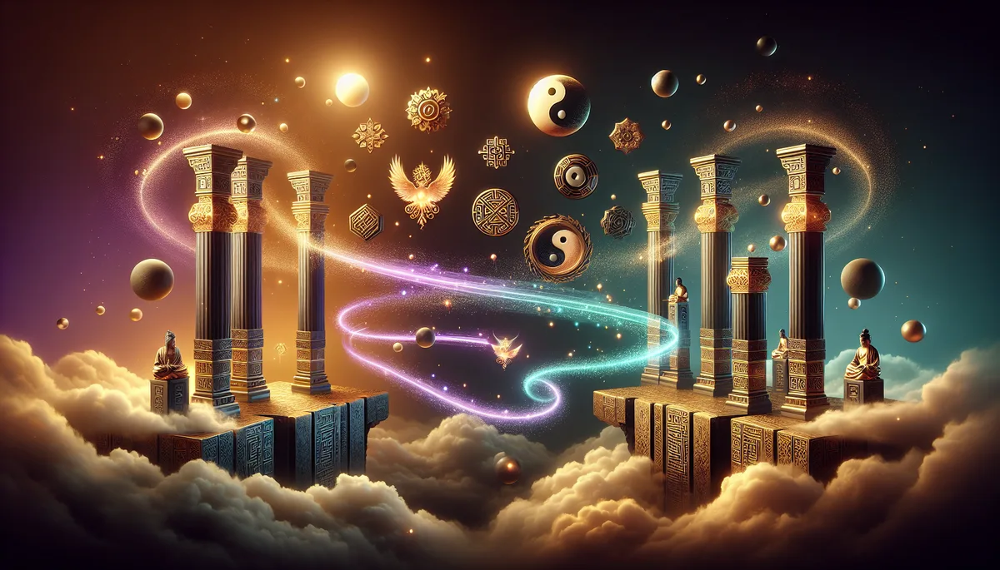

📜 源頭脈絡
三千多年前的殷商，有人把一塊龜甲放在火上烤。
甲骨裂開的紋路，就是天意。那是人類最早的「讀取」行為。不是迷信，是在什麼資訊都沒有的年代，用手邊僅有的方法向天地要一個答案。
天干地支就在那個時候成形。甲乙丙丁戊己庚辛壬癸，十天干。子丑寅卯辰巳午未申酉戌亥，十二地支。最初只是拿來紀年紀日的工具，像一把很老的尺，量的是時間。沒有人想到，千年之後這把尺會被拿來量人的命。
唐朝・李虛中
真正讓八字「從天文變成人學」的第一人，是唐代的李虛中。
他做了一件當時沒人做過的事：把一個人出生的年、月、日三柱寫下來，對照天干地支的五行生剋，推這個人一生會怎麼走。
算得有多準？準到韓愈親自替他寫墓誌銘。韓愈在〈殿中侍御史李君墓誌銘〉裡面寫，李虛中推人禍福壽夭，「百不失一二」。韓愈是什麼人？古文運動的領袖，唐宋八大家之首，一輩子最看不起怪力亂神。連他都服了。
不過李虛中的系統少了一根柱子。他只用年月日，沒有加「時辰」。同一天出生的人，在他的系統裡面長一模一樣。這個缺口，要等兩百年後才有人補上。
宋朝・徐子平
補上第四根柱子的人叫徐子平。加入出生時辰以後，同一天出生的人終於有了差異。四根柱子，每根兩個字，加起來八個字。「八字」這個名字，就是從他這裡來的。
後來有人把徐子平的方法整理成書，叫《淵海子平》。將近一千年的命理教科書。今天在任何一間廟口看到的算命先生，翻的那本泛黃的書，追到源頭多半繞不開這本。
明朝・萬民英
到了明朝，萬民英寫了《三命通會》，把前面幾百年各路說法全部收攏。十神體系在這裡成熟：正官、偏官、正印、偏印、正財、偏財、食神、傷官、比肩、劫財。十個角色，講的是一個人和世界互動的十種方式。
再往後，《滴天髓》講格局高低，《窮通寶鑒》講月令調候，《子平真詮》講十神配置的細微平衡。每一本都像一塊拼圖，拼的是同一張圖：一個人出生那一刻，天地之間的能量配比。
三千年。從烤龜甲到四柱八字。問的問題從來沒變過：我是誰？我在哪？接下來會怎樣？
工具越磨越細。問題還是那個問題。
八字最核心的概念叫「月令」。出生在哪個月份，決定命局的底色。春天木旺、夏天火旺、秋天金旺、冬天水旺。聽起來像玄學？現代科學其實在用另一套語言說同樣的事。
2014年，匈牙利布達佩斯Semmelweis大學的Gonda教授團隊，在歐洲神經精神藥理學大會上發表了一項研究。追蹤四百多位受試者，發現春夏出生的人，正向情感的基線明顯高於秋冬出生者。原因和出生季節影響多巴胺、血清素等神經傳導物質有關，而且這個影響到成年後仍然偵測得到。八字裡「月令定格局」的觀念，和這個發現幾乎是平行邏輯。
2015年，美國哥倫比亞大學醫學中心的Boland和Tatonetti團隊，比對了紐約長老會醫院170萬名患者的病歷紀錄與出生月份，發現55種疾病和出生月份之間存在統計上顯著的關聯。三月出生者心房顫動的風險最高，秋季出生者較容易出現呼吸道問題。這和八字裡「秋金主肺」「春木剋土」的五行推演，走的方向一致。
不只月份。出生季節還會影響生理時鐘。冬天出生的人比較傾向夜貓子，夏天出生的人更接近早起型。八字裡用「日主」看一個人的核心，用「時柱」看內在驅動力，背後隱隱對應的就是晝夜節律對性格的長期塑造。
這些研究不是在「證明八字是科學」。它們說的是：古人用五行、用月令、用時辰去分類人的底層特質，和現代神經科學、流行病學觀察到的現象，在某些路口碰上了。不同語言，走到同一個地方。
八字看的是五行的配比。金木水火土，不是五種東西，是五種狀態。像烹飪的火候。猛火快炒和文火慢燉，用的是同一個爐子，煮出來完全不同。
五行偏燥的人，聞到薰衣草身體會鬆一口氣。沉降的氣味幫他把升到頭頂的火往下帶。偏寒的人，冬天早晨滴兩滴肉桂在掌心搓熱，那個暖意從鼻腔直達腹部，整個人被裹住。偏濕的人，杜松漿果的乾燥感像一陣山風，吹散積在身體裡那種悶脹的滯感。
八字不是判決書。精油不是處方。都是座標。一個告訴您現在站在哪裡，另一個提醒身體，哪個方向可以再走一步。
✦ 鼻子在聞五行，身體在回應節氣。不用懂命理，身體替您懂。